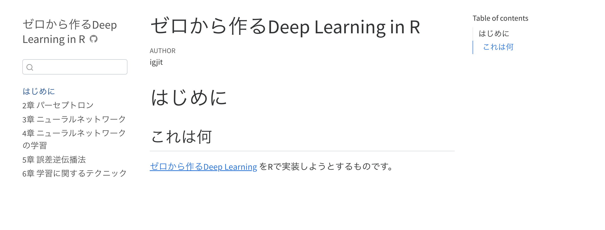
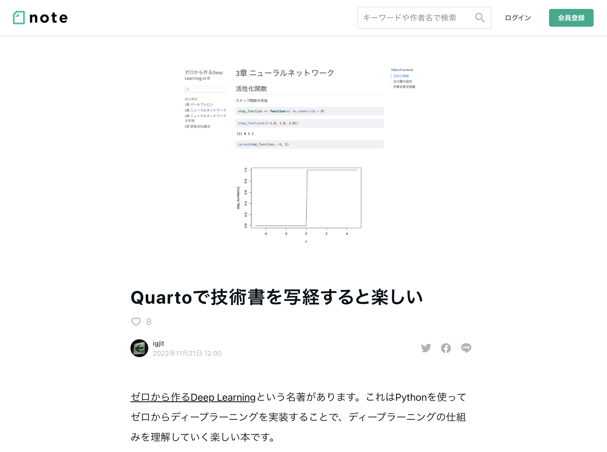

ゼロから作るDeep Learning
in R
ゼロから作るDeep Learning
in R

最近読んでる本

ディープラーニングの本格的な入門書。 外部のライブラリに頼らずに、 Python 3によって ゼロからディープラーニングを作る ことで、ディープラーニングの原理を楽しく学びます。
ディープラーニングの本格的な入門書。 外部のライブラリに頼らずに、 Python 3によって ゼロからディープラーニングを作る ことで、ディープラーニングの原理を楽しく学びます。
じゃあRでもできるんじゃね？
やってみた。

6章 学習に関するテクニック
の途中までできた。
Q: Rでもゼロからディープラーニングを作れるのか。
A: できそう。
むしろ
Python
R
import numpyせずにbaseで行列を計算できるRのほうが 「外部のライブラリに頼らずに」ゼロから作ってると言える。
気づき
オブジェクトシステム
Rではオブジェクトシステムを選べる
- base R
- S3
- S4
- RC (reference class)
- CRAN package
- R6
- R.oo
- proto
どれを使うべきかは解きたい問題と好みによる。
私はS3のシンプルさと、それを使った参照透明なコードが好きだけど、
Pythonのミュータブルなオブジェクトを直訳する場合はR6が便利
Python
R (R6Class)
だいたい同じように書ける。
Advanced Rを読めばすぐにR6を使えるようになるよ。
関数型プログラミング

ニューラルネットワークの伝播
つまりひとつ前の値を使って何かする、をくり返す場合
元のPythonのコード
purrr::accumulateで簡潔に書ける
配列の初期化、インデックスによるアクセス、条件分岐など、低レベルの処理を書かなくてよくなった。
どう計算するか、ではなく、それが何であるか、を記述できる。
文芸的プログラミング

ゼロから作るDeep Learning in R はQuartoを使って書かれている。
note書いたので読んでね。

まとめ
ゼロから作るDeep LearningをRでやってる
技術書の写経楽しい
プログラミング楽しい
R楽しい
みんなも